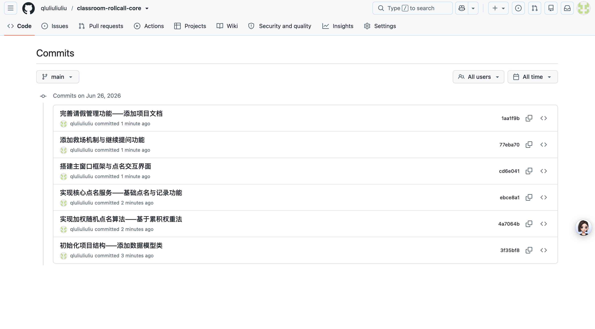

基于有状态的课堂点名系统 · 个人任务博客
黄底 = 本人负责模块
本人在项目中担任组长，负责核心点名逻辑与项目架构。 主要任务包括：设计学生与点名记录数据模型、实现加权随机点名算法、开发点名服务（含救场机制与状态管理）、构建主窗口框架与点名交互界面、请假排除机制、Git仓库管理与团队协作。
| # | 功能 | 描述 |
|---|---|---|
| 1 | 加权随机点名算法 | 实现累积权重法加权随机选择，权重 = 100/(被点名次数+1)，被点名越少概率越高，确保机会均等 |
| 2 | 救场与题目太难机制 | 连续3人未答出 → 从高回答率学生中选取；救场3连败 → 提示"题目太难，建议老师讲解" |
| 3 | 继续提问与排除机制 | 答出后弹窗问是否继续，继续则排除已答出+请假学生，结束则重置本轮 |
| 4 | 点名交互界面 | 完整交互流程：课程设置→点名→答出/未答出→弹窗→继续/结束，右侧点名历史记录 |
| 5 | MVC架构设计 | model(实体)/service(业务)/view(界面)三层分离，包名rollcall，采用DAO模式与策略模式 |
| 6 | 请假排除机制 | 在Student模型中添加onLeave字段，call()中合并排除列表包含请假学生索引，确保请假学生不会被点到 |
| 7 | Git与团队管理 | GitHub仓库创建、Issues任务跟踪、团队博客搭建、组员Git培训 |
共负责8个文件（4个独立负责 + 2个定义规范 + 2个需理解接口）
| # | 文件 | 类型 | 说明 |
|---|---|---|---|
| 1 | model/Student.java | 定义规范 | 学生实体模型（序列化、权重公式、请假状态） |
| 2 | model/RollCallRecord.java | 定义规范 | 点名记录模型（时间格式化） |
| 3 | service/RollCallService.java | 独立负责 | 核心点名服务：加权选择、救场机制、6状态变量管理、继续提问 |
| 4 | util/WeightedRandom.java | 独立负责 | 加权随机算法：累积权重法select()、救场selectTop() |
| 5 | view/MainFrame.java | 独立负责 | 主窗口：JTabbedPane组织三面板 |
| 6 | view/RollCallPanel.java | 独立负责 | 点名交互界面：完整交互流程、继续提问弹窗、题目太难提示 |
| 7 | dao/StudentDAO.java | 需理解接口 | 数据持久层：ObjectStream读写、异常处理策略 |
| 8 | util/ExcelUtil.java | 需理解接口 | Excel读写工具：POI导入导出、Cell类型判断 |
采用累积权重法：计算所有学生权重之和 → 生成[0, 总和)随机数 → 从第一个学生开始累加权重，首次超过随机数时选中。权重公式：100 / (被点名次数 + 1)，确保被点名次数越少的学生被选中概率越高。
当同一问题连续3位学生未答出时，系统自动切换为救场模式：从历史回答率最高的学生中随机选取（回答率需达到最高回答率的80%以上）。救场模式下若连续3人也未答出，弹出提示建议老师讲解。
RollCallService管理6个状态变量：unansweredList（本轮未答出索引）、answeredThisRound（本轮已答出索引）、rescueCallCount（救场调用次数）、rescueFailCount（救场失败次数）、inRescue（救场标志位）。状态转换：普通模式3连败→救场模式→救场3连败→提示讲题。有人答出时全部重置。
| 设计模式 | 应用位置 | 说明 |
|---|---|---|
| 策略模式 | WeightedRandom → RollCallService | 算法策略可替换（普通/救场） |
| MVC架构 | 全项目 | Model-View-Service 三层分离 |
| DAO模式 | StudentDAO | 数据访问与业务逻辑解耦 |
